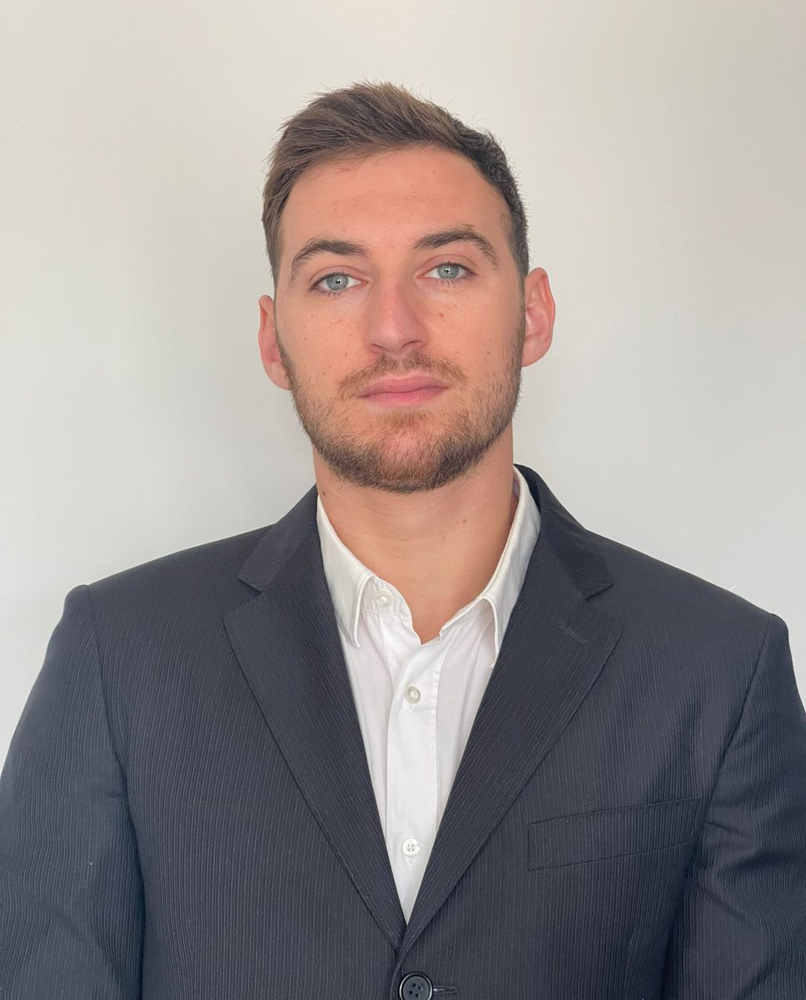
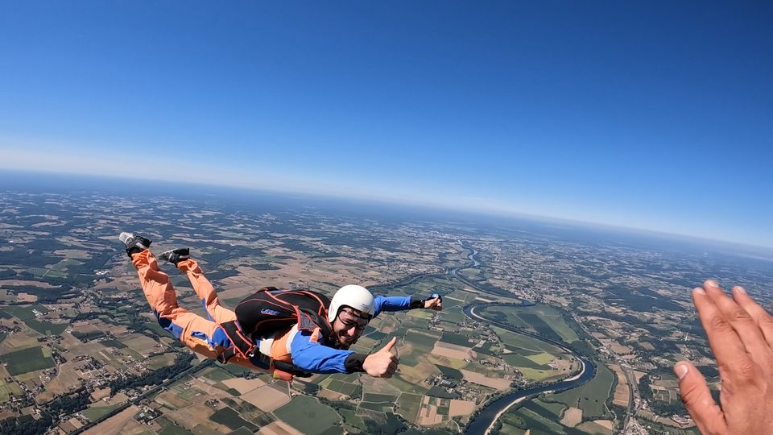
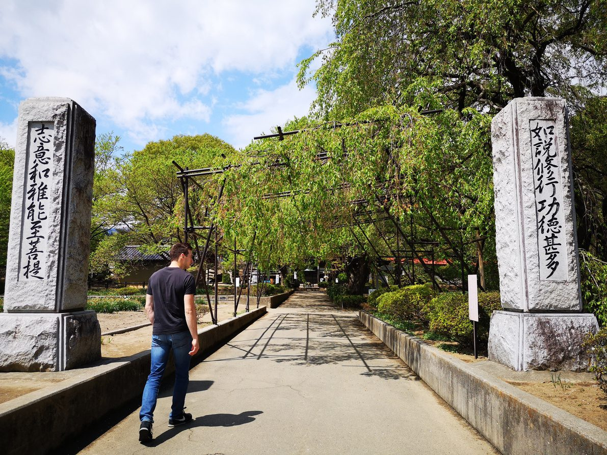
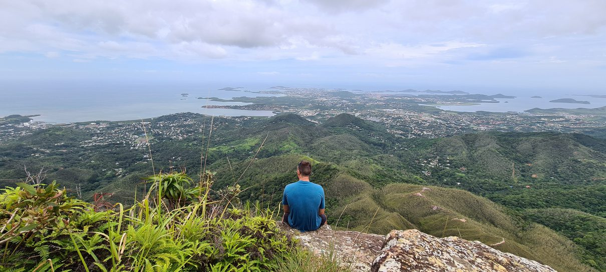
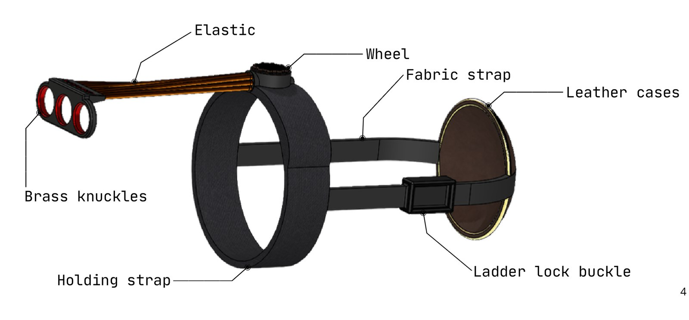
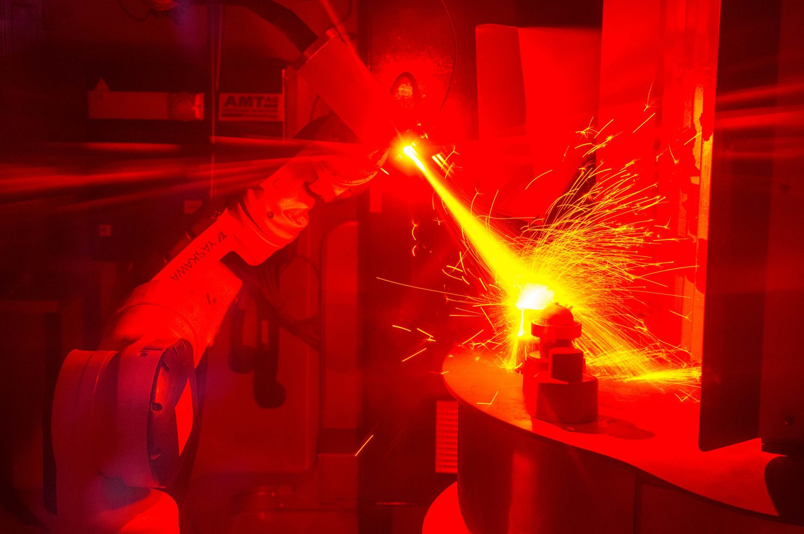

Quality & regulatory
ISO 13485, ISO/IEC 17025, ISO 14971, ISO 10993, MDR 2017/745, 21 CFR Part 820
- Technical documentation in a regulated environment
- Internal audits
- CAPA
- Non-conformities
- Document control
- Traceability
- COFRAC accreditation
MSc Bioengineering (2nd year) · Aix-Marseille University
An unconventional path driven by one goal: putting my technical and human skills to work for the medical world.
Available for a 6-month end-of-studies internship from mid-February 2027 · Open to relocation in France and abroad

Profile
Going back to university gave me the technical foundation I was missing. Alongside my studies, my laboratory and industry internships, as well as my rehabilitation medical device project, gave me scientific rigour, analytical thinking and a hands-on understanding of the sector's requirements.
In the Gendarmerie, I learned to handle pressure, to act methodically and rigorously in urgent situations and to adapt to every audience. It gave me a taste for challenges, teaching and conflict management.
Now in the second year of an MSc in Tissue and Implant Bioengineering, I want to bring this combined scientific and human skill set to engineering projects in the medical field.
Decisions under pressure, leading teams of up to 30 people, strict adherence to procedures.
Experimental protocols, EMG and motion capture, signal processing, statistics.
ISO 13485, ISO/IEC 17025, MDR 2017/745: audits, CAPA, document control, traceability.
Skills
ISO 13485, ISO/IEC 17025, ISO 14971, ISO 10993, MDR 2017/745, 21 CFR Part 820
From literature review to statistical analysis
From CAD model to prototype
Simpler, better-traced quality processes
Strict procedures in the Gendarmerie, then audits and traceability at HTI.
Designed a protocol and measurement setup on my own at LIBM and recruited 25+ participants; ran several projects in parallel at HTI.
Teams of up to 30 people, training of reservists.
Autonomous decisions in critical situations, Operation Sentinelle.
From the Gendarmerie to research, then quality; an exchange year in Quebec.
Coaching athletes, supervising cadets, presenting in cross-department meetings.
A year of training for the GIGN selection tests, self-taught Japanese.
Scientific rigour and emotional intelligence in support of decisions.
Journey
Professional experience, research and education. Click a step to see the details, missions and photos.
Aix-Marseille University · Faculty of Sport Sciences
Biomedical engineering degree at the crossroads of mechanics, biology and clinical practice, backed by the Institute of Movement Sciences (AMU & CNRS) and the IML at AP-HM hospitals.
See detailsHTI Technologies · HTI Group
ISO/IEC 17025 QMS for AURA Lab's COFRAC accreditation, digital quality workflows, workstation audits and CAPA.
See detailsR&D project · MSc year 1, Aix-Marseille University
Design, prototyping and evaluation on 10 volunteers of an instrumented wrist rehabilitation orthosis. Selected to be put forward to the PEPITE entrepreneurship programme.
See detailsCIRRIS · Interdisciplinary Research Centre in Rehabilitation and Social Integration
EMG data processing in MATLAB: cutaneous reflex, intermuscular coherence and sensorimotor mechanisms, in an international collaboration.
See detailsRouge et Or · Université Laval swimming team
Strength and conditioning for groups of up to 15 university swimmers: programming, injury prevention, load monitoring.
See detailsUniversité Savoie Mont Blanc · exchange year at Université Laval
Admitted directly into year 2 through recognition of prior experience, then year 3 as an exchange student at Université Laval (Quebec). Two research internships.
See detailsLIBM · Inter-university Laboratory of Human Movement Biology
Independent design of a force-velocity protocol and measurement setup; recruited about thirty participants.
See detailsFrench National Gendarmerie · Mobile Gendarmerie
Public order operations in mainland France and overseas; led up to 30 people, made decisions under heavy pressure.
See detailsFrench Army · 9th Airmobile Support Regiment
Operation Sentinelle, high-security site guarding, training new reservists.
See detailsBlock'Out (permanent contract) · Abscisse Agency (temp work)
All-round employee at Block'Out (climbing gym), then temporary receptionist with Abscisse Agency.
See detailsLycée Mistral · Avignon University
Strong foundations in maths, physics and chemistry, analytical rigour and an intensive workload.
Lycée Le Mirail · Bordeaux
Classes in the morning six days a week, sport in the afternoon.
Commitments, sport and travel: they shaped me as much as my degrees.

Skydiving licence B, scuba diving level 1, and weekly climbing, swimming, running and weightlifting.

Canada, the USA, Japan, Spain, Italy, England, the Netherlands, Germany, Hungary. Self-taught Japanese for 3 years.

Volunteer and assistant at ADDAB (sports association), reservist with the 9th RSAM, a year of training for the GIGN selection.
Science, economics, photography, human relations, biomedical technologies and artificial intelligence.
Projects
From designing a medical device to digitalising a quality management system.

Sept. 2025 – Apr. 2026
Design, simulation, prototyping and EMG / kinematic evaluation on 10 volunteers of a Class I medical device.

Apr. – Aug. 2026
ISO/IEC 17025 document system for COFRAC accreditation and digital quality workflows.
Apr. – May 2024
Protocol and measurement setup designed independently; test validity and reliability with 30 participants.
Jan. – May 2025
MATLAB EMG processing scripts (cutaneous reflex, intermuscular coherence) in a French-Quebec project.
References
Excerpts from my recommendation letters (translated from French). The full original letters are available as PDF.
« His seriousness, motivation and commitment were unanimously appreciated by the HTI team. Yoan showed genuine professional conduct, combining autonomy and team spirit. »Translated from French
« Yoan is a brilliant student: he achieved one of the best results, 20 points above the average. He carries out every task assigned to him with professionalism and rigour. »Translated from French
« He showed great autonomy, rigour and maturity in this work. It is quite rare for this kind of assignment to be given to a second-year undergraduate. »Translated from French
Contact
An opportunity, a question, a project? I reply quickly.
06 18 67 82 40
rousselot.yoan98@
yoan-rousselot
Marseille, France
Open to relocation in France and abroad